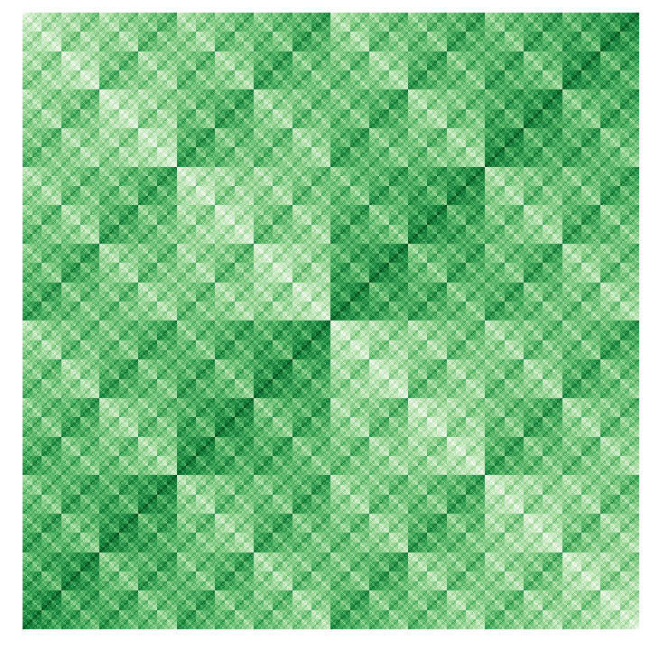
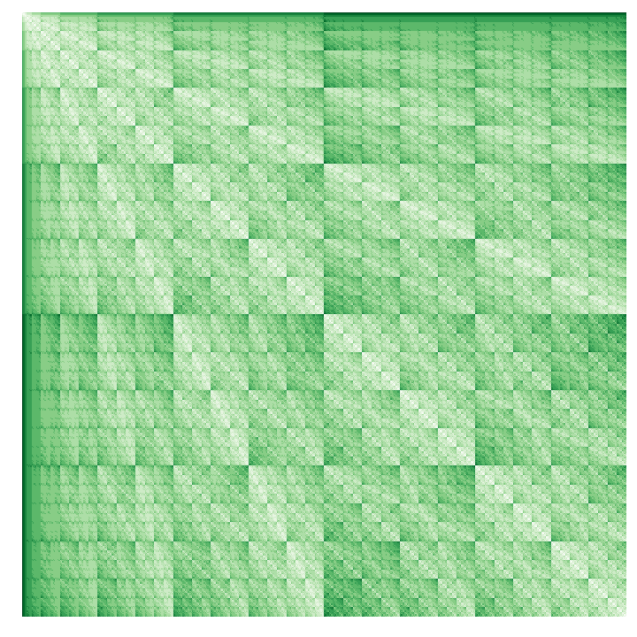
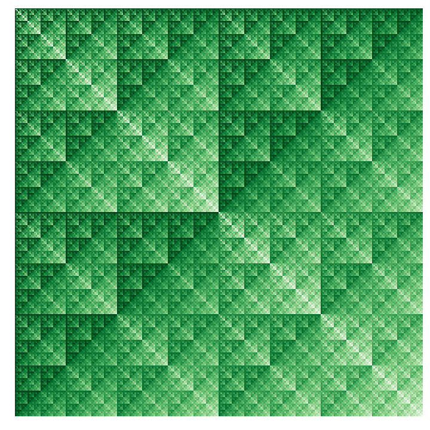
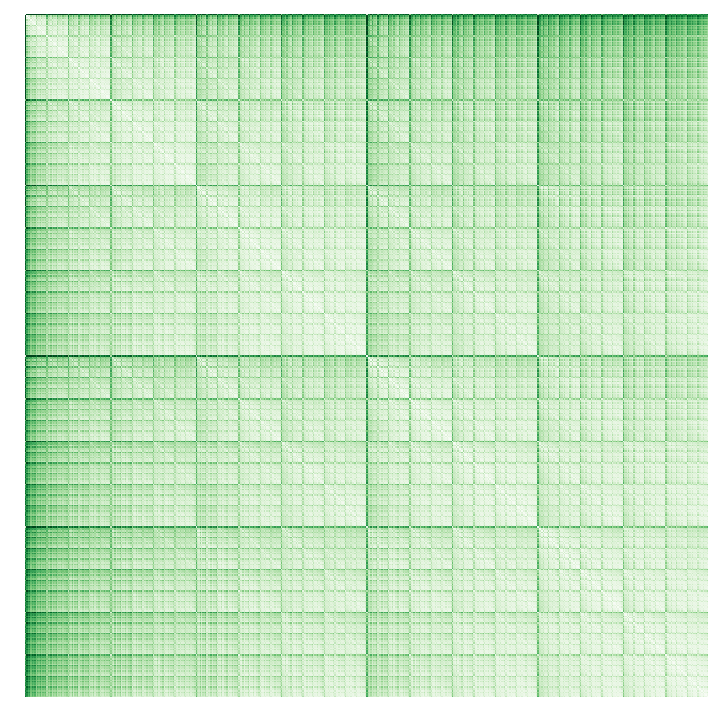

Rémi Le Priol
Ph.D. Candidate
Mila
Université de Montréal
About Me
In my research, I am exploring ideas ranging from causality to physics and optimization in the goal of making deep learning more robust. I enjoy science that involves beautiful mathematics along with visualizations that make them easily accesible. I am lucky to benefit from the supervision of Simon Lacoste-Julien and Yoshua Bengio in this endeavor.
Short bio: I grew up near Paris. I moved around from Meudon, to Versailles (preparatory class at Lycée Hoche), to Palaiseau where I studied at Ecole Polytechnique (X2013). I graduated with an engineering degree and a Master of Science in maths and machine learning (M2 MVA) in 2018, accumulating some work and research experience on the way. Details in my resume.
Google Scholar profile: for my list of publications.
SDCA4CRF: During the year 2017 I worked on an optimization algorithm for a structured prediction model called CRF. Along the way I found out a way to systematically improve the convergence speed of the algorithm SDCA by sampling data points cleverly.
Miscellaneous
bitstring-knitting: a visual inspection of distances applied to bit strings.




Some visualizations on the behavior of volumes in high dimensional hypercubes and hyperspheres.
Search Engine Optimization: Gabriel Huang
Whether in or out of research, I enjoy play, which often takes the form of rock climbing, slacklining, acroyoga or meditation.